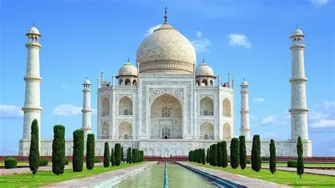
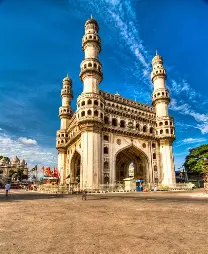
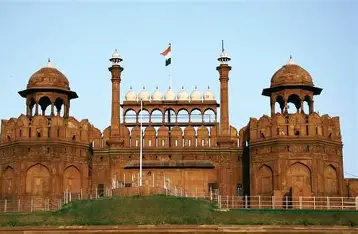

Nikhil Bogawar 23E15A0503
Student at Biet
Home Page
paragraph
formating

"Nature" refers to the physical world and everything in it, including life, plants, animals, landscapes, and natural phenomena like weather and the universe as a whole. It can also refer to the inherent character of something or the British weekly scientific journal, Nature. Humans rely on nature for essentials like air, food, and shelter, and its study is a cornerstone of science, as seen in journals like Nature and documentary series like PBS's Nature.
Lists
ordered lists
- Ordered list item 1
- Ordered list item 2
unordered lists
- "Nature" refers to the physical world and everything in it, including life, plants, animals, landscapes, and natural phenomena like weather and the universe as a whole. It can also refer to the inherent character of something or the British weekly scientific journal, Nature. Humans rely on nature for essentials like air, food, and shelter, and its study is a cornerstone of science, as seen in journals like Nature and documentary series like PBS's Nature.
-
"Nature" refers to the physical world and everything in it, including life, plants, animals, landscapes, and natural phenomena like weather and the universe as a whole. It can also refer to the inherent character of something or the British weekly scientific journal, Nature. Humans rely on nature for essentials like air, food, and shelter, and its study is a cornerstone of science, as seen in journals like Nature and documentary series like PBS's Nature.
comment and comment syntax
| Name |
image |
description |
| Taj Mahal |
 |
The Taj Mahal is an ivory-white marble mausoleum on the right bank of the river Yamuna in Agra, Uttar Pradesh, India. It was commissioned in 1631 by the fifth emperor, Shah Jahan (r. 1628–1658), to house the tomb of his beloved wife, Mumtaz Mahal; it also houses the tomb of Shah Jahan himself. The tomb is the centrepiece of a 17-hectare (42-acre) complex, which includes a mosque and a guest house, and is set in formal gardens bounded on three sides by a crenellated wall |
| Charminar |
 |
The Charminar (lit. 'four minarets') is a monument located in Hyderabad, Telangana, India. Constructed in 1591, the landmark is a symbol of Hyderabad and officially incorporated in the emblem of Telangana.[3] The Charminar's long history includes the existence of a mosque on its top floor for more than 434 years. While both historically and religiously significant, it is also known for its popular and busy local markets surrounding the structure, and has become one of the most frequented tourist attractions in Hyderabad. Charminar is also a site of numerous festival celebrations, such as Eid-ul-adha and Eid al-Fitr,[4] as it is adjacent to the city's main mosque, the Makkah Masji |
| Red fort |
 |
The Red Fort, also known as Lal Qila (Hindi pronunciation: [laːl 'qɪlaː]), is an historic Mughal fort located in the Old Delhi area of Delhi, India. It served as the main residence of the Mughal emperors. Commissioned by Emperor Shah Jahan on the 12th of May 1639, the fort was constructed following his decision to shift the Mughal capital from Agra to Delhi. Originally adorned in red and white, the fort's design is attributed to Ustad Ahmad Lahori, the architect of the Taj Mahal. The Red Fort is a prominent example of Mughal architecture from Shah Jahan's reign, combining Persian and Indian architectural styles. |